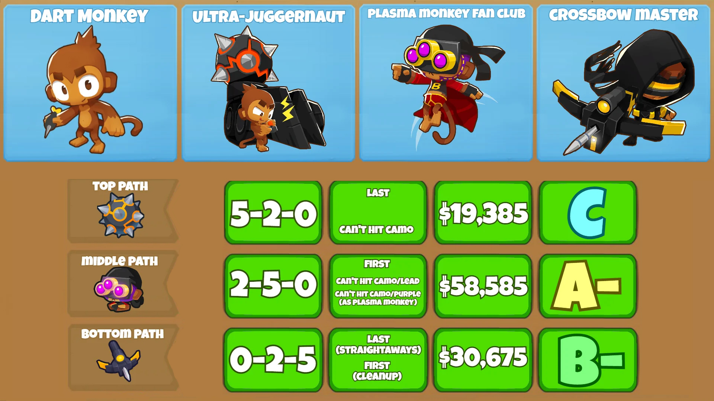
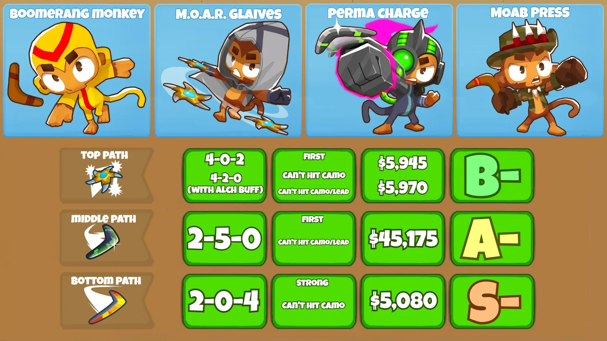
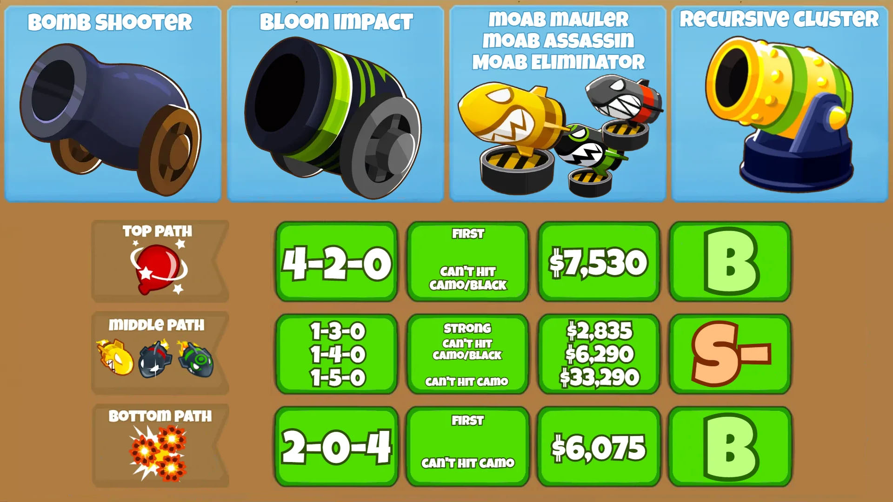
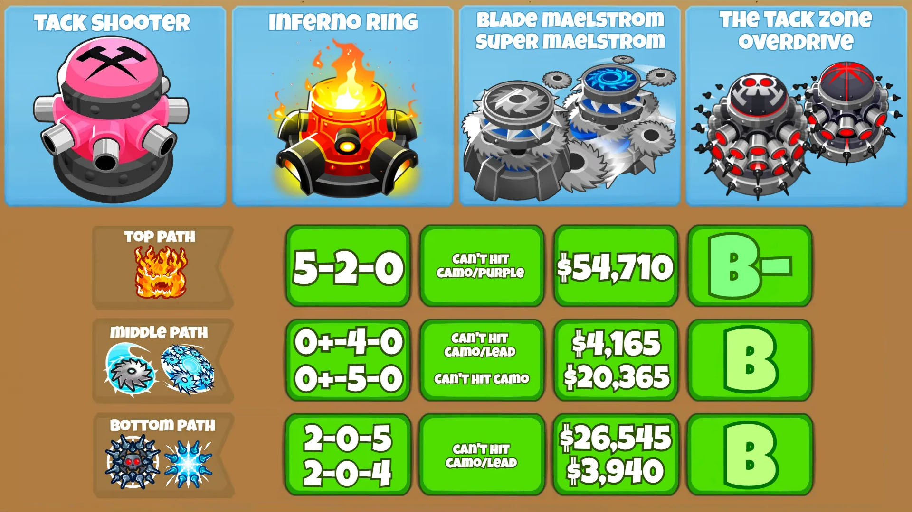
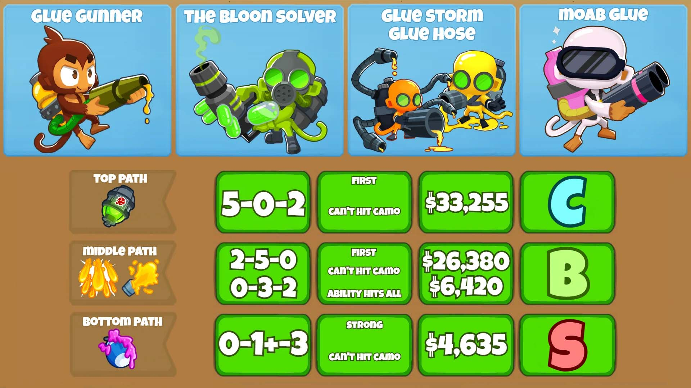
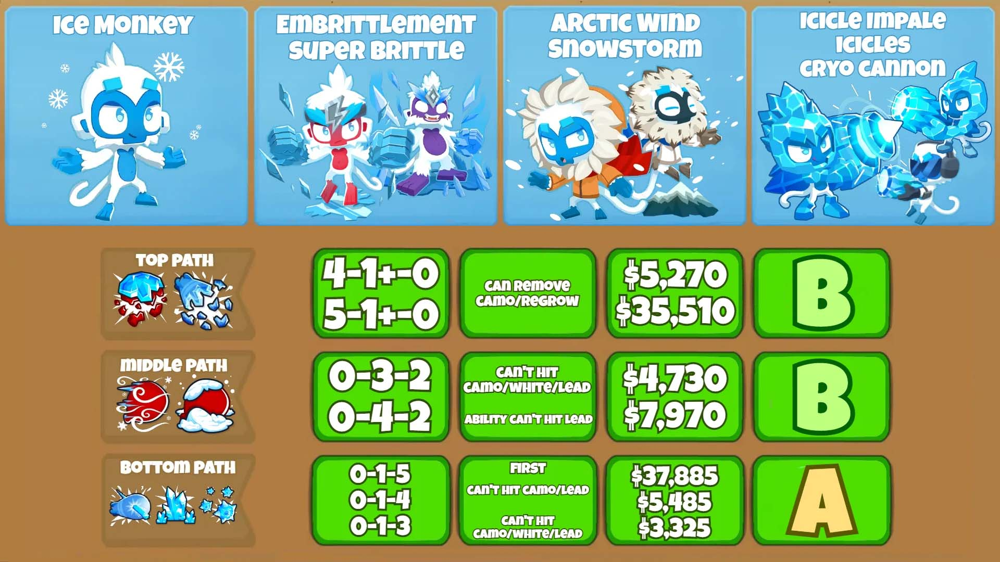

Torres Primarias
Los monos primarios son, con diferencia, la clase de monos más baratos que los jugadores pueden colocar, aunque cabe señalar que los monos primarios varían en poder y, lamentablemente, la mayoría de los monos primarios carecen de la capacidad de detectar globos camuflaos sin el uso de una torre de apoyo. En esta página veremos más a fondo cada mono y torre Primaria de Bloons TD 6, el objetivo de esta página es poder entender las habilidades y utilidades de cada mono y veremos:
- Sus caminos o mejoras más optimas (Por ejemplo: 5-2-0 se refiere a mejorar el primer camino al nivel 5, el segundo a 2 y el tercero no mejorarlo).
- El costo total de los caminos mencionados.
- A que globos deben atacar (First, Last, strong, etc.) y cuales no pueden atacar (Camo, Lead, y ceramic que son los Camuflados, blindados y ceramicos respectivamente).
- Su rango que va desde la D siendo el rango mas bajo hasta S siendo este el rango mas alto.
- Una descripcion y explicación de los monos.
*NOTA: Los juegos no estan completamente traducidos al español por lo que en esta guía pusimos un poco de info en ingles para que sea más fácil de replicar en el juego.*
Mono Dardero
El mono dardero es la torre más básica y económica. Lanza dardos a los bloons y puede ser mejorada para disparar múltiples dardos a la vez e incluso convertirse en un Super Mono. Los Dart Monkeys son más útiles cuando se colocan en un camino largo y recto debido a la cantidad de perforación que reciben. Este mono en su version base cuenta con un precio de $200, una preforación de 2 y 1 de daño.
Mono Boomerang
El Mono Boomerang tiene una cantidad decente de alcance y puede proporcionar a los jugadores una buena cantidad de poder de estallido general dependiendo de los caminos que elijan los jugadores. El Mono Boomerang lanza Boomerangs con un movimiento circular, lo que esencialmente hace que los jugadores tengan que colocar un Mono Boomerang alrededor de una pista redonda. Este mono en su version base cuenta con unprecio de $325, una preforación de 4 y 1 de daño
Cañon
El Cañon es una torre bastante fuerte que Lanza bombas que hacen daño en área. Si bien los cañones causan una buena cantidad de daño, no podrán dañar a los Bloons negros o a los Bloons Zebra ya que estos tienen resistencia a las explosiones. Esta torre en su version base cuenta con un precio de $650, una preforación de 40 y 1 de daño.
Tira Tachuelas
La Tira Tachuelas es una de las torres de disparo más rápidas que los jugadores pueden colocar en todos los Bloons TD 6 y brinda a los jugadores la capacidad de atacar en un círculo completo. Desafortunadamente, la Tira Tachuelas tiene un uso bastante limitado simplemente debido al hecho de que muchos niveles no cuentan con pistas que se consideren apropiadas para la Tira Tachuelas. Los jugadores siempre deben intentar colocar la Tira Tachuelas en una sección que tenga un círculo para poder aprovechar el daño de 360° que causa. Esta torre en su version base cuenta con un precio de $280, una preforación y daño 1 por tachuela teniendo 8 de daño y perforación en total.
Artillero Pegajoso
La función principal del Artillero Pegajoso es ralentizar los globos, esencialmente haciendo que sea más fácil para los jugadores dañarlos antes de que comiencen a filtrarse. En general, un Glue Gunner será una compra de mitad a final de la partida, ya que los Glue Gunners no causan suficiente daño a los globos, principalmente debido a la lenta velocidad de ataque del Glue Gunner y porque requiere mejoras especificas para que este haga daño. Este mono en su version base cuenta con un precio de $270, una preforación de 1 y 0 de daño
Mono de hielo
El Mono de Hielo se usa para congelar y detener Bloons para evitar que pasen una gran cantidad de globos con la esperanza de ganar algo de tiempo adicional para destruirlos a todos. Lo bueno del Mono de hielo es que se pueden mejorar para causar una cantidad de daño considerable y afectar a los bloons de clase MOAB y Camo Bloons, lo que esencialmente los convierte en una de las torres de apoyo más completas del juego. La ubicación de un Ice Monkey es muy similar a la de un Tack Shooter, ya que el Ice Monkey tiene un daño de 360°. Este mono en su version base cuenta con un precio de $500, una preforación de 40 y 1 de daño